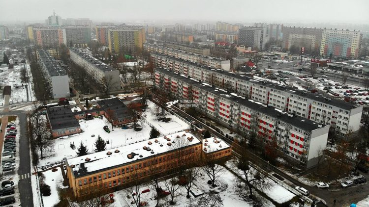
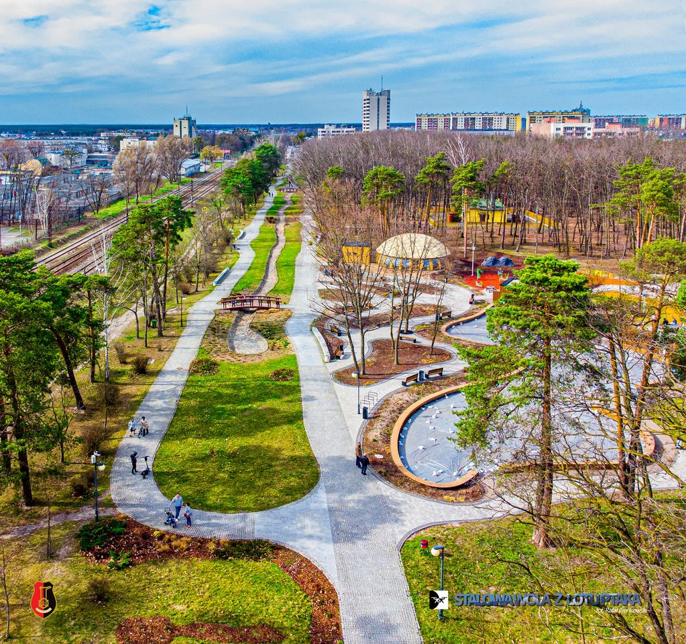

Dzisiaj Stalowa jest pięknym i nowoczesnym miastem,
żyje w nim masa ludzi i jest 3 najbardziej zaludnionym miastem w gminie.
Demografia przedstawia najwięcej ludzi w wieku 59 lat,
oraz ogólnie większą ilość kobiet niż mężczyzn, szczególnie w wieku 85 lat.
Miasto jest podłączone pod inne m.in Nisko nowoczesną komunikacją miejską.
Zabytki takie jak bazylijka, drewniany kościół bądź stary
i funkcjonujący dworzec PKS zachowanie są w bardzo dobrym stanie.